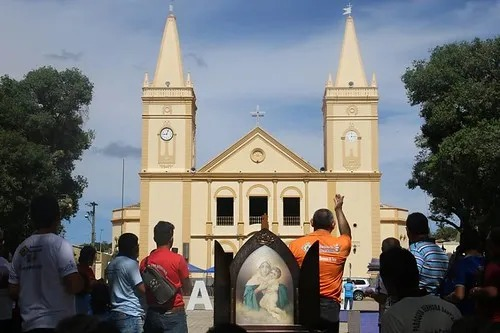
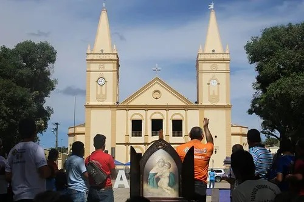

Paróquia Nossa Senhora da Penha | Sé Catedral de Crato
A Catedral de Nossa Senhora da Penha, no Crato, foi o primeiro templo católico da cidade, construído em 1745 pelos frades Carlos Maria de Ferrara e Fidélis de Sigmaringa, em um terreno cedido pelo capitão-mor Domingos Álvares de Matos e sua esposa. Inicialmente feita de taipa e chão batido, foi dedicada à padroeira Nossa Senhora da Penha de França.
Em 1817, foi inaugurada a estrutura atual, que se tornou catedral em 1914 com a criação da Diocese do Crato. A Paróquia de Nossa Senhora da Penha foi oficialmente criada em 4 de janeiro de 1768 pelo bispo Dom Francisco Xavier Aranha e instalada pelo padre José Teixeira de Azevedo.
Foi a segunda paróquia criada no Cariri, após a de Nossa Senhora da Luz, em Missão Velha. Apesar de seus 149 anos de existência oficial, a paróquia teve apenas 25 vigários, refletindo os longos períodos de atuação clerical no Brasil Colônia e Império, quando os párocos eram indicados pelo Estado.

 
